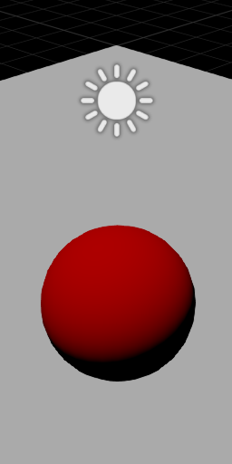
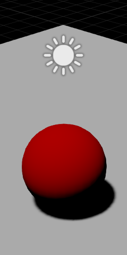

シャドウ
シャドウは重要な情報と現実感をシーンに提供します。
| シャドウ オフ | シャドウ オン |
|---|---|
|  |  |
ディレクショナル ライト、ポイント ライト、スポット ライトのみがシャドウをキャストします。
シャドウ マップ
Stride はシャドウ マッピングを使用してシャドウをレンダリングします。シャドウ マップを理解するには、太陽の中心にカメラがあると想像してください。つまり、太陽の視点から見下ろします。
太陽から見えるすべてのものにはライトが当たっています。太陽から見えないすべてのものは (つまり、遮蔽物の背後にあるもの)、シャドウの中にあります。
この視点から、シャドウを作成する各ライトに対するシャドウ マップが作成されます。これにより、すべての可視ピクセルの光源からの距離がわかります。Stride は、シーンをレンダリングするとき、シャドウ マップで各ピクセルの位置を調べ、ピクセルが光源から「見える」かどうかを把握します。光源からピクセルが見える場合、そのピクセルは照射されます。見えない場合、そのピクセルはシャドウの中になります。
ディレクショナル ライトの場合、シャドウ効果が大きなビュー範囲に及ぶ可能性があります。つまり、現実感を高めるには、特別な処理が必要になります。詳細については、「ディレクショナル ライト」を参照してください。
シーン内にあるシャドウをキャストする各ライトは、シャドウ マップ アトラス テクスチャの領域を使用します。各領域のサイズは、複数の要因に依存します。
LightShadowMap.Sizeプロパティに基づくshadowMapSizeFactor:
| シャドウのサイズ | シャドウ重要性係数 |
|---|---|
| XLarge | 2.0 |
| Large | 1.0 (ディレクショナル ライトの既定値) |
| Medium | 0.5 (スポット ライトの既定値) |
| Small | 0.25 (オムニ ライトの既定値) |
| XSmall | 0.125 |
- 画面空間内のライトの投影サイズ (
lightSize)- ディレクショナル ライトの場合、lightSize は最大と等しくなります (screenWidth、screenHeight)
- スポット ライトの場合、lightSize は、投影される球体のターゲット スポット ライト コーンでの投影と等しくなります
ShadowMapBaseSizeは1024です。
最終的なシャドウ マップのサイズは、次のように計算されます。
// サイズ係数を計算する
var shadowMapSizeFinalFactor = shadowImportanceFactor * shadowMapSizeFactor;
// ライト投影サイズにサイズ係数を乗算する
var shadowMapSize = NextPowerOfTwo(lightSize * shadowSizeFinalFactor);
// 最大サイズに制限する
shadowMapSize = min(shadowMapSize, ShadowMapBaseSize * shadowSizeFinalFactor);